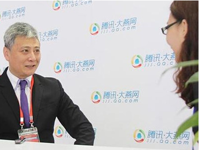

公司动态
 动态
动态
全国服务热线：
18033778790
- 地址：河北省石家庄市裕华区建华南大街215号万达写字楼B座12层
- 邮编：050600
- 传真：0311-86905608
当前位置：首页>公司简介
直击"5.18":华航让地球低一度
添加时间：2017-04-20

5月19日，2015年廊坊国际经济贸易洽谈会第二天，河北华航新能源开发集团负责人王祥亮做客腾讯大燕网。
王祥亮：华航集团是1992年成立，长期致力发展我国的环保事业，涉猎范围涵盖水处理、大气治理、新能源新技术的开发利用及实施。目前，公司拥有发明专利8项（其中美国专利3项），实用新型专利11项；拟申报发明专利5项，实用新型专利7项。
大燕网：此次是华航集团第二次参加"5.18"经洽会，您觉得本届"5.18"都有哪些变化呢？
王祥亮：首先，政府的支持力度非常大。其次，经洽会规模空前，设有专门的环保产业展厅，使众多参展的科技企业汇集于此，对环保技术、话题进行互动交流，为大气治理、污水处理等环境问题提供了一个很好的技术交流平台。
大燕网：本届经洽会以"协同发展，绿色崛起"为主题，在京津冀协同发展方面，华航集团有哪些融入措施呢？
王祥亮：我们与邢台政府、保定政府签订了战略合作，今天也和石家庄政府签订了一个关于治理雾霾和水污染的战略协议。我们把在美国引进的先进技术和我们的发明专利，将其运用到治理雾霾的终端上，从根本上达到一些治理成效；去年我们也参加了廊坊经贸洽谈会，当时我们带来了治理雾霾的集成机组、在农村推广的节能环保炉还有治理污水的系列产品。今年我们带着第二代、第三代的新的环保技术参加此次廊坊5.18经洽会。
大燕网：如何通过"互联网+"来推进生态环境的优化？
王祥亮：现在"互联网+"已经被提到了一个国家战略的层面，与我们的生活息息相关，从环保产业方面阐述，如城市利用清洁能源集中供暖替代以往的煤炉取暖方式，不仅可以减少对环境的污染，而且，现在还可以通过互联网信息化，精准地进行信息采集、管理，使用手机轻松便捷就可以调到舒适温度，也方便了现代人们生活。
上一条：抱歉暂无数据
下一条：石家庄市政协莅临十里洋房参观调研[返回列表]